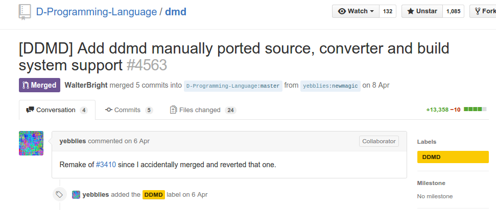
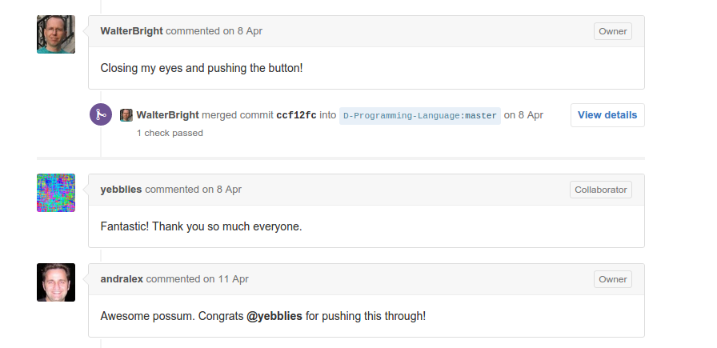
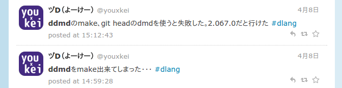
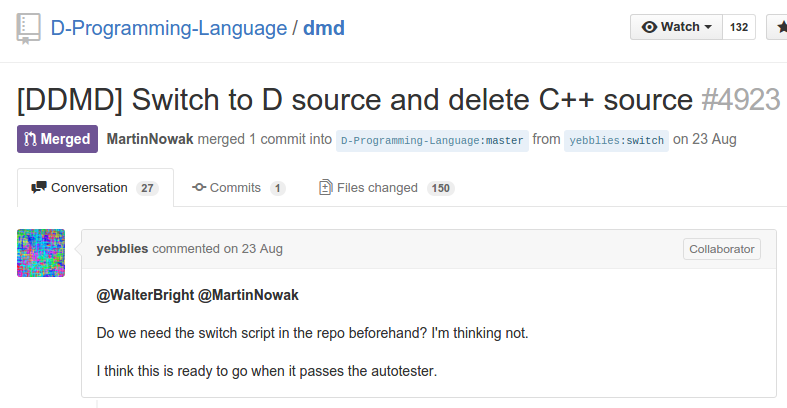
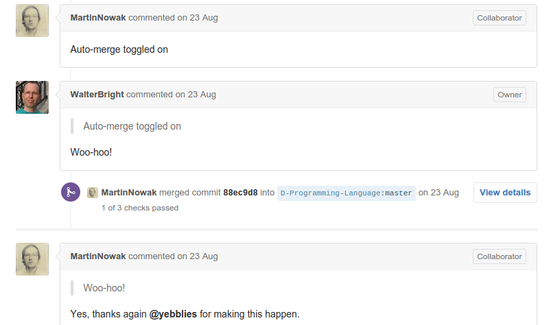

<!doctype html>
<html>
    <head>
        <meta charset="utf-8">

        <title>dmdのフロントエンドの実装がC++からD言語になった話</title>

        <meta name="apple-mobile-web-app-capable" content="yes" />
        <meta name="apple-mobile-web-app-status-bar-style" content="black-translucent" />

        <meta name="viewport" content="width=device-width, initial-scale=1.0, maximum-scale=1.0, user-scalable=no, minimal-ui">

        <link rel="stylesheet" href="css/reveal.css">
        <link rel="stylesheet" href="css/theme/night.css" id="theme">

        <!-- Code syntax highlighting -->
        <link rel="stylesheet" href="lib/css/zenburn.css">

        <!--[if lt IE 9]>
            <script src="lib/js/html5shiv.js"></script>
        <![endif]-->
        <style rel="stylesheet">
            .reveal .progress {
                height: 12px !important;
            }
            .reveal .slide-number {
                font-size: 32px !important;
            }
            footer {
                position: absolute;
                bottom: 0px;
            }
        </style>
    </head>

    <body>
        <div class="reveal">
            <div class="slides">
                <section data-markdown data-separator="^\n---">
                    <script type="text/template">
# dmdのフロントエンドの実装がC++からD言語になった話

---
## 自己紹介


* Twitter: [@youxkei](https://twitter.com/youxkei)
* Github: [youxkei](https://github.com/youxkei)
* 最近やってること
    * Haskell
    * ロジバン
    * 東方紺珠伝LunaticRTA

---
## dmdとは

---
## D言語のコンパイラ

---
## Written in C++（だった）

---
## 「D言語のコンパイラなのにC++で書かれてるのはおかしいよなぁ？」

---
## ddmd
D言語実装のdmdを作るプロジェクト

---
## Daniel Murphy a.k.a yebblies
だにえる まーふぃ

---
## magicport2
C++からD言語に変換

dmdに特化

---
## dmdにmagicportを含めるプルリク
[](https://github.com/D-Programming-Language/dmd/pull/4563)

---
## 眼を閉じてプルリクのマージボタンを押すウォルたん
Walter Bright : D言語の作者

[](https://github.com/D-Programming-Language/dmd/pull/4563)

---
## magicport2を使ってddmdをmakeする、とあるD言語er


---
## そしてついに・・・

---
## C++のソースコードを消してD言語に移行するプルリク
[](https://github.com/D-Programming-Language/dmd/pull/4923)

---
## マージされる
[](https://github.com/D-Programming-Language/dmd/pull/4923)

---
## やった！！！

---
## 無事、D言語erがdmdに貢献できるように

---
## めでたしめでたし

---
## 使ったもの
* スライド
    * [reveal.js](https://github.com/hakimel/reveal.js/)
    * Markdown
* プレゼン
    * google-chrome --app='http://www.example.com/'
    * mikutter
                    </script>
                </section>
                <footer><p><a href="https://goo.gl/S5cAqY">https://goo.gl/S5cAqY</a></p></footer>
            </div>
        </div>

        <script src="lib/js/head.min.js"></script>
        <script src="js/reveal.js"></script>

        <script>
            Reveal.initialize({
                controls: false,
                progress: true,
                history: true,
                center: true,
                slideNumber: 'c/t',
                margin: 0,
                minScale: 0,
                maxScale: 1024,

                transition: 'none', // none/fade/slide/convex/concave/zoom

                    // Optional reveal.js plugins
                dependencies: [
                    { src: 'lib/js/classList.js', condition: function() { return !document.body.classList; } },
                    { src: 'plugin/markdown/marked.js', condition: function() { return !!document.querySelector( '[data-markdown]' ); } },
                    { src: 'plugin/markdown/markdown.js', condition: function() { return !!document.querySelector( '[data-markdown]' ); } },
                    { src: 'plugin/highlight/highlight.js', async: true, callback: function() { hljs.initHighlightingOnLoad(); } },
                    { src: 'plugin/zoom-js/zoom.js', async: true },
                    { src: 'plugin/notes/notes.js', async: true }
                ]
            });
        </script>
    </body>
</html>
